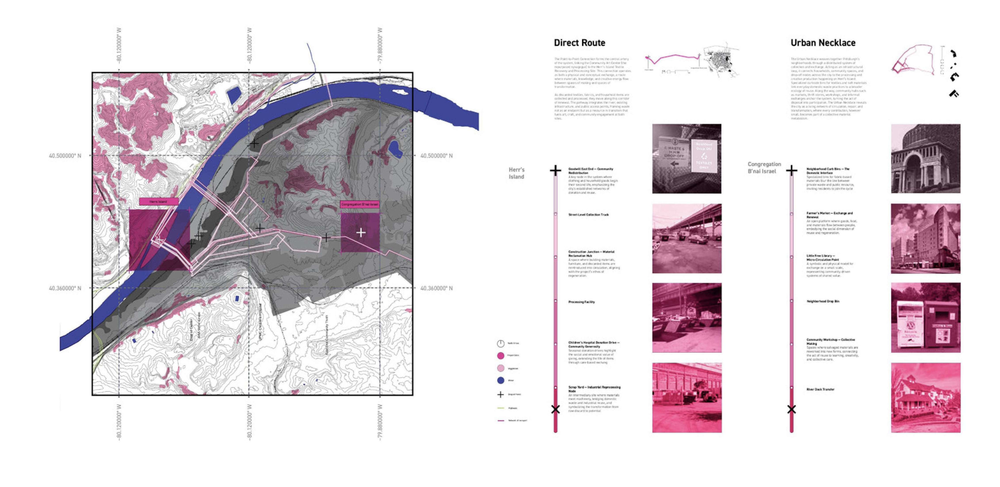
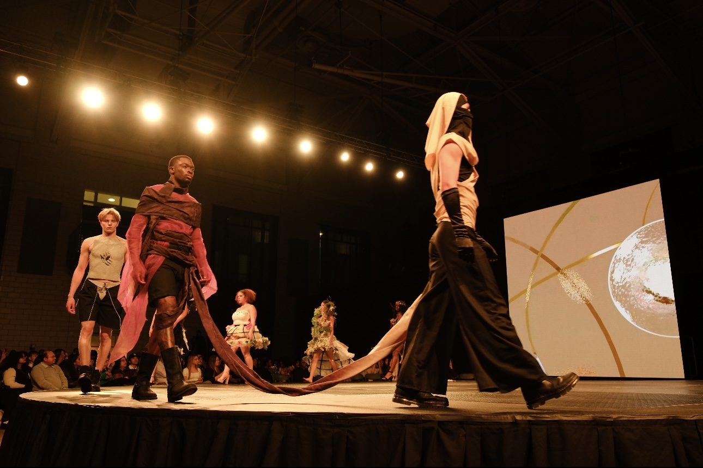

Laser-cut ripstop cushions with foam inserts, designed for the modular seating of the 2026 ACC Spring Carnival Gateway Pavilion and Abeille Voyante Tea Co.
FRAME BY FRAME
2026
A reconfigurable pavilion system for Carnegie Mellon University’s Spring Carnival 2026 that is later repurposed into a outdoor seating system for a local teashop.

FABLE
2026
Designed the Home and Lines pages for the 2026 Lunar Gala website, presenting the fashion show and its 16 designer teams.
URBAN NECKLACE
2024
A speculative urban intervention in Pittsburgh exploring new systems of connectivity, material recovery, and public space through adaptive reuse. On Herrs Island, a modular scaffolding structure organizes spaces for exhibitions, recreation, and material processing using reclaimed fabrics.
FLAT-FAB FOOTBALL
2024
An adaptable, airless football designed for repairability and accessibility through modular 3D-printed components and fabricatable panels. Paired with a portable goalpost projection, the design reimagines football through material reuse and improvised play spaces.

RECUPERAR‑SE
2024
An eight-look fashion collection exploring trauma and renewal through sculptural garments made from concrete, acrylic, metal, glass, and textiles.
FIELD
2023
A generative drawing study based on Chand Baori Stepwells and Broch Towers. Architectural elements are transformed through rotations, directional movement, and overlapping geometries into a three-dimensional composition.

 (1).jpg)

.jpg)